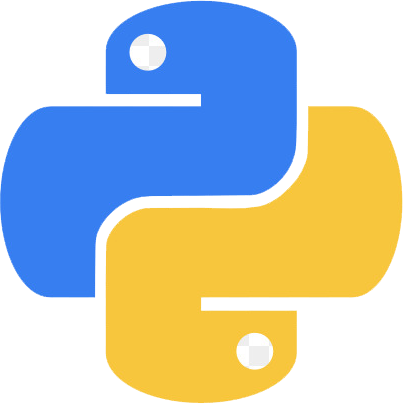
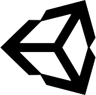

Sobre
Desenvolvedor WEB
Front-end com HTML e CSS
Experiêcia nas linguagens: Python, C#, Java e JavaScript
Conhecimento nas engines: Unity e Construct
Projeto The last Humanconclusão de curso técnico, publicado no Encontro Sobre Jogos e Mobile Learning, 2020, Coimbra: Centro de estudos Interdisciplinares do Século 20 (CEIS20).


- 
- 